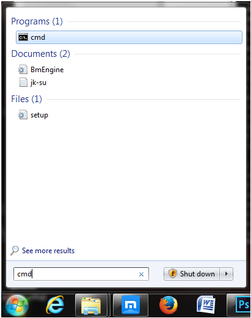

Python 3 for Windows
Natievly, Windows does not include a version of python on its systems. Here is a guide that will enable you to run pyhon programs on your systrem.
Installing Python 3
- For Windows: Go here to get Python 3.
- Download Python 3.4.2.
- Double click on the Python.msi file. The first step of the installation screen will look something like this:

- Follow the installation instructions, keeping all of the default settings.
- You now have python on your computer! Yay!
Running Python Programs
First, you need to double check if the python launcher installed correctly. Do this by opening up command prompt.
- To open up command prompt, type "cmd" into the search bar, like so: 
- In the shell type the command "py". It should tell you the version of python that it currently running, as well as begin the python interpreter. This is indicated by the ">>>" at the beginning of the line.
 To exit the interpreter type "exit()"
To exit the interpreter type "exit()" - Now when you want to run a python program, type py followed by the name of the program. The following runs a variation of Hello World: